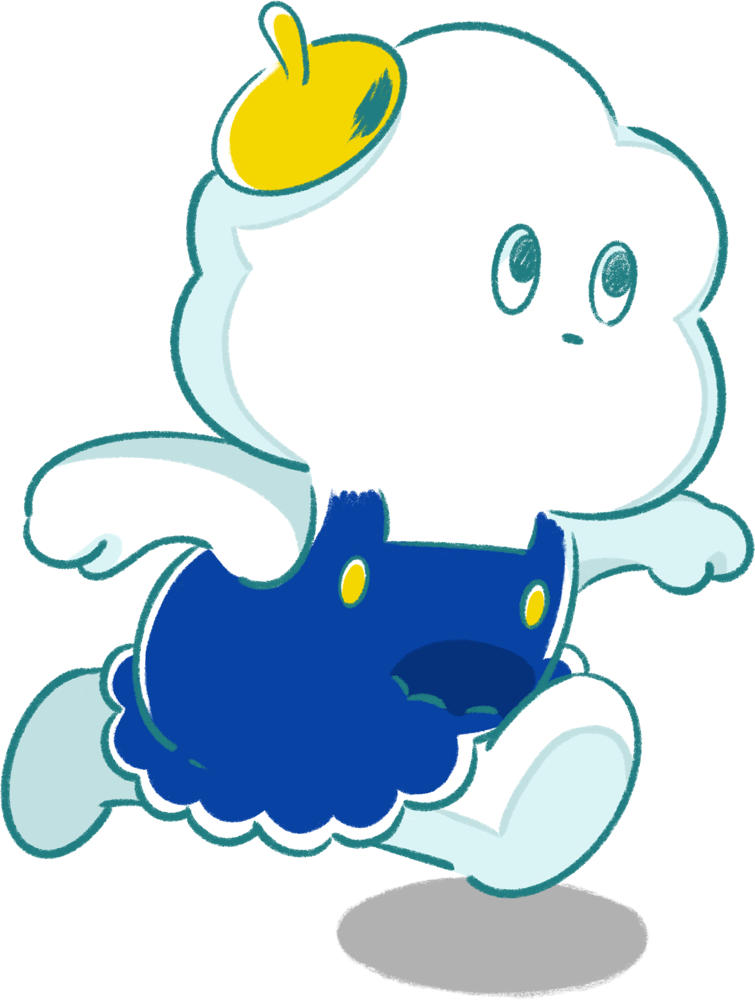
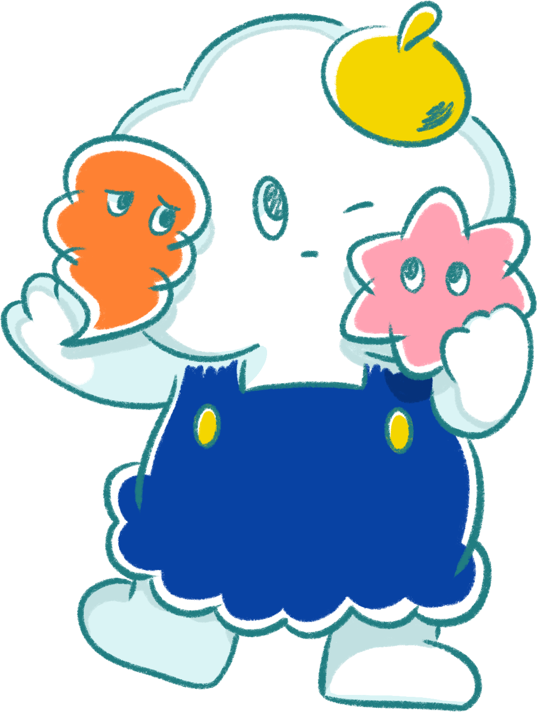

モヤモヤを、 ワクワクに。
アイデアと表現力で、
わたしたちと一緒に理想をカタチにしていきませんか？

Our Mission
デザイングループが目指していること

ビジネスの現場に溢れる「どうしたらいい？」に、
デザインで答えを。
わたしたちの役割は、その悩みに寄り添い課題を解決することです。
ただ「作る」だけでなく、その先の利用者を「楽しませる」プロフェッショナル集団を目指しています。
日々の運用から、一歩踏み込んだ改善提案まで
オンラインストアのバナーや特集ページ制作、サイト更新、進行管理といった運用を主軸に、UI/UXデザインやデータ分析に基づく提案も行います。
あらゆる課題を解決するクリエイティブ
運用で培ってきた提案力を武器に、WEBブランディング、印刷物、映像、ロゴ、キャラクター制作など、多岐にわたるソリューションを提供します。
Our Values
わたしたちの強み
一気通貫の体制
撮影、企画、制作、精度運用までを自社で完結。デザインのその先にある成果まで肌で感じることができます。
豊富な実績
100社以上のファッションECを支えてきた実績。多様なブランドの課題解決を通じて、ノウハウが蓄積されています。
チームの総合力
デザイナー、ディレクター、コーダーが密に連携.個人のスキルアップと共にチーム全体で高品質なクリエイティブを生み出します。
Target Positions
目指すポジション
まずは、WEBデザイン、ECビジネス、システム、それぞれの側面から知識を身に着けた「ECデザイナー」を目指します。
デザインだけに留まらず、あらゆる知識を蓄えることで、将来的にキャリアパスをディレクターやUI/UXデザイナーなど多方面へ広げられます。
マネージャー
デザイナー
エンジニア
Career
研修・育成制度
当社では、社員それぞれが活躍できる環境づくりとして、様々な研修や育成制度を用意しています。配属部署も希望に応じて柔軟に対応しています。
入社前 〜 入社後
- · 入社前交流会／研修（任意）
- · 各種オリエンテーション
- · 業務講習
- · メンター制度でのサポート
その他・キャリアパス
- · 検定取得補助制度 / キャリア相談・面談
- · 得意分野を活かしたポジショニング
- └ チームリーダー / 品質管理リーダー / Webディレクター / UI/UXデザイナー
Culture
社内の雰囲気


コミュニケーションを大切にした、
風通しの良い環境です。
Welfare & Benefits
福利厚生・制度
ワークライフバランスの取りやすい制度や教育制度など
スタッフの働きやすさを考えた充実の制度が数多く整っています。
※ 以下は福利厚生・制度の一部です。
誕生日祝い金制度
慶弔見舞金
資格取得補助制度
UIターン補助
人事評価制度
入社前交流会・研修
デザインアワード
服装髪型自由

We are looking for...
こんな人を求めています
ポジティブな方
コミュニケーションを大切にし、何でも楽しんで取り組むチャレンジ精神のある方。前向きで成長意欲が高い方。
主体性のある方
売上に繋げるための設計を自ら考え、提案できるデザイナーになれるよう、主体性をもって業務に取り組める方。
幅広い探求心のある方
クライアントのブランド価値向上の一助となれるように、幅広い視野でトレンドを取り入れられる方。
誠実さ
クライアントの売上損失等を防ぐために、日々の細かい作業も抜かりなく取り組める誠実な方。
Interview
デザイナーインタビュー